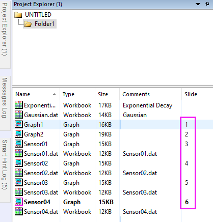
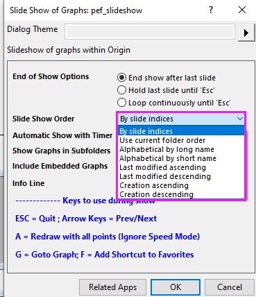

FAQ-1063 Wie ändere ich die Reihenfolge meiner Slideshow in OriginPro?
change-slide-order-originpro
Letztes Update: 15.09.2020
Wenn eine Grafik in Origin erstellt oder geladen wird, weist Origin einen Folienindex zu, z. B. 1, 2, 3, ... Dieser bestimmt die Reihenfolge der Grafiken, in der sie in Origins Hilfsmittel Slideshow dargestellt oder an Powerpoint gesendet werden. Sie können den nächsten Index in der Ansicht Details des Projekt Explorers sehen.
- 
Per Standard wird die Slideshow nach Folienindizes gezeigt. Sie können jedoch auch eine andere verfügbare Reihenfolge wählen wie alphabetisch, Erstellung etc.
- 
Sollte sich keine der verfügbaren Reihenfolgen eignen, können Sie die Folienreihenfolge manuell anpassen und einige Grafiken in der Slideshow im Projekt Explorer überspringen. Dafür:
- Zeigen Sie das untere Bedienfeld des Projekt Explorers (PE) in der Ansicht *Details* an.
- Klicken Sie auf den Spaltenheader Folie, so dass das untere Bedienfeld nach Folienindex sortiert wird. Nun können Sie einen nach oben und nach unten zeigenden Pfeil neben dem Folienspaltenheader sehen. Hinweis: Dieser Schritt kann NICHT übersprungen werden.
- Ziehen Sie das Diagramm-/Layoutfenster bei nach Folienindex sortiertem unterem Bedienfeld im Projekt Explorer nach oben oder unten, um die Folienindexnummer zu ändern.
- Um eine Grafik in der Slideshow zu überspringen, klicken Sie mit der rechten Maustaste in den Projekt Explorer und wählen Sie Folie überspringen.
- Um die Folienindizes entsprechend einer anderen Spalte zurückzusetzen, z. B. nach aufsteigendem Name des Diagrammfensters: Klicken Sie im Projekt Explorer zuerst auf den Spaltenheader Name, so dass die Diagrammfenster aufsteigend sortiert werden. Klicken Sie dann mit der rechten Maustaste auf den grauen Bereich des unteren Bedienfelds und wählen Sie Folienindizes zurücksetzen im Kontextmenü.
Schlüsselwörter: